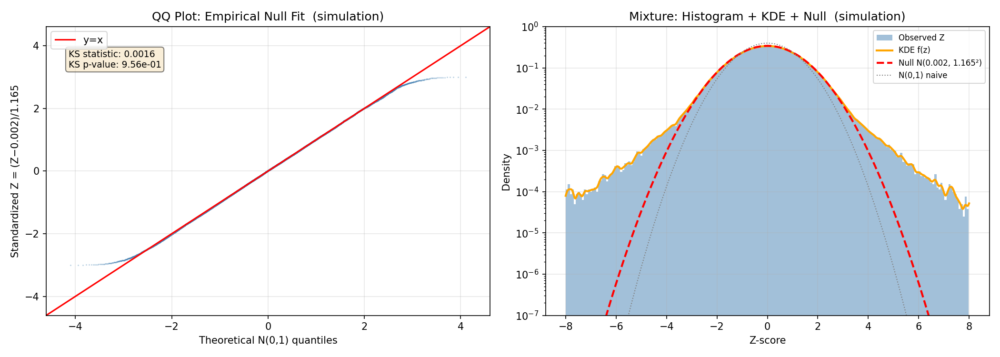
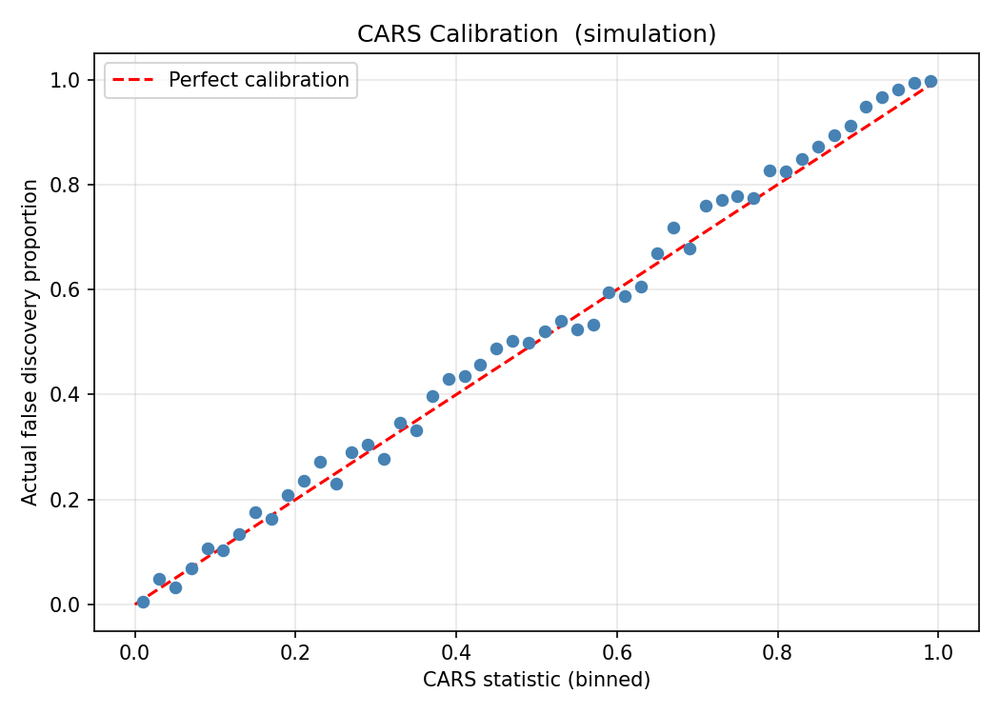
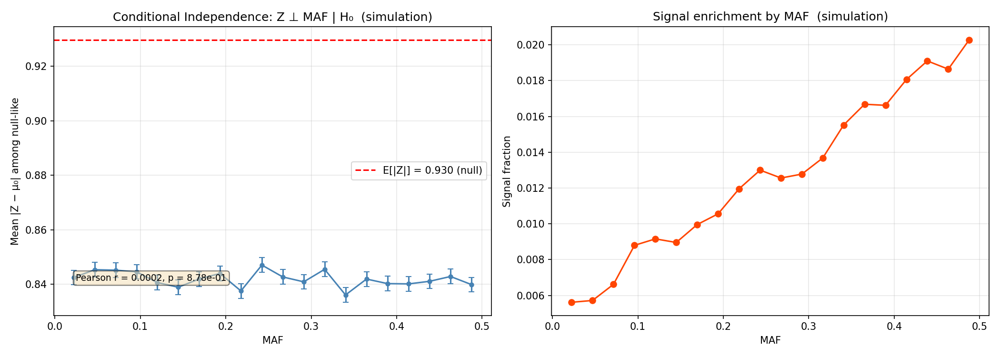

Covariate-Adaptive Ranking & Screening with Empirical Null Estimation for Large-Scale GWAS Discovery
CARS (Cai, Sun & Wang 2019) · SDA step-up · Jin-Cai (2007) empirical null · 2D FFT-KDE bivariate density
76,755 cases + 243,649 controls (Trubetskoy et al., Nature 2022) — 37.6M variants processed in 86 seconds
| Method | Discoveries | FDR | vs. Baseline |
|---|---|---|---|
| BH (raw, no correction) | 334,061 | Inflated | — |
| BH (GC-corrected) | 168,638 | Controlled | Baseline |
| Adaptive-Z (empirical null, marginal) | 172,749 | Controlled | +2.4% |
| CARS-SDA v3.0 (bivariate KDE) | 218,476 | Controlled | +29.6% |
| → CARS-exclusive discoveries | 58,213 | Novel |
Adaptive-Z uses only the marginal density f(Z). CARS uses the bivariate joint density f(Z, MAF) — capturing how signal enrichment varies with allele frequency. The 2D FFT-KDE makes this computationally efficient: 37.6M variants in ~90 seconds.
Four innovations combined into a single pipeline
Estimate the true null N(μ₀, σ₀²) from the empirical characteristic function at moderate frequencies. Corrects genomic inflation (σ₀ = 1.098, λ_GC = 1.34) without arbitrary central-region selection.
The CARS density ratio uses the joint density of (Z, MAF) — not just conditional binning. The screened set Tτ estimates the null covariate distribution.
Product-kernel KDE via 2D FFT convolution. O(n + G²·log G) — handles 37.6M variants in seconds. Silverman bandwidth per dimension.
Calibrate the screening set by computing P(lfdr ≥ τ | H₀) from 50K null Monte Carlo draws. Prevents optimistic bias from using data-dependent screening.
Rigorous diagnostics on m=1M simulated variants with non-Gaussian alternative (Gaussian+Laplace mixture)

QQ plot: near-perfect alignment (KS p = 0.96). Right: KDE (orange) matches histogram; empirical null (red) correctly envelopes central mass; naive N(0,1) (gray) is too narrow.

Binned CARS values track the diagonal — the statistic is well-calibrated as a bivariate local FDR analogue across the full [0,1] range.

Left: Mean |Z| is flat across MAF bins (r = 0.0002, p = 0.88). Right: Signal fraction increases with MAF — this is the information CARS exploits.
| Method | Rej | FDR | Power |
|---|---|---|---|
| BH (raw) | 9,832 | 27.0% | 56.4% |
| BH (GC) | 3,753 | 4.9% | 28.1% |
| Adaptive-Z | 3,781 | 4.9% | 28.3% |
| CARS-SDA | 3,994 | 5.3% | 29.8% |
CARS beats Adaptive-Z by +5.2% and BH-GC by +6.0% in power
58,213 CARS-exclusive variants organize into coherent biological pathway networks
Full neurotransmission cascade: receptor composition → modulation → Ca²⁺ sensing → vesicle fusion.
Thalamic oscillations, neuronal repolarization, resting potential, and calcium homeostasis.
Neural circuit assembly from neuronal identity through structural stabilization to axon guidance.
Genetic evidence for the mitochondrial SCZ hypothesis. Heme synthesis → Krebs cycle → Complex I.
Intracellular logistics: SNARE fusion, endosomal sorting, nuclear transport, microglial pruning.
Upstream gene regulation: GC-box TF hub, chromatin remodeling, myelination programming.
★ = PGC3/SCHEMA confirmed locus (positive control validating CARS-SDA)
All 1,096 unique genes from CARS-exclusive discoveries — searchable and sortable
| Gene ↕ | Chr ↕ | Position ↕ | Z-score ↕ | P-value ↕ | MAF ↕ | lfdr ↕ | Lead SNP |
|---|
Run CARS-SDA v3.0 on your own GWAS data
from src.cars_sda import cars_sda Z = beta / se # z-scores from GWAS S = minor_allele_freq # auxiliary covariate (MAF) # Proper bivariate CARS with 2D FFT-KDE rej, cars_stat, thr, mu0, sigma0, diag = cars_sda(Z, S, alpha=0.05) print(f"Discoveries: {rej.sum():,}") print(f"Empirical null: N({mu0:.3f}, {sigma0:.3f}²)")